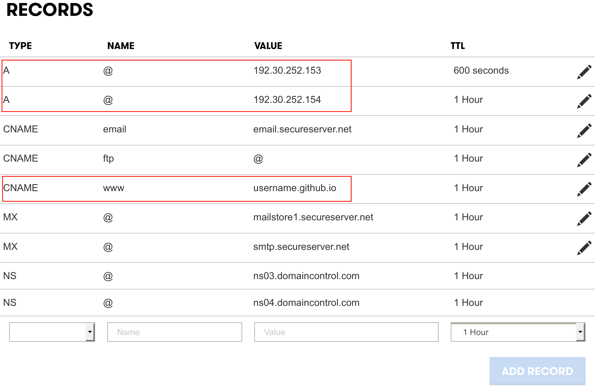

После того, как вы опубликовали ваш статичный сайт на Github Pages и убедились, что тот открывается по адресу вроде username.github.io, самое время привязать к нему собственный домен. В этой статье я покажу, как это сделать на примере домена, зарегистрированного у Cheapnames, но для других регистраторов инструкция останется аналогичной.
Поддерживаемые домены
В общем говоря, Гитхаб поддерживает два типа доменов: корневой (apex) и поддомен. В таблице ниже приведены примеры.
| Тип домена | Пример |
|---|---|
| www поддомен | www.example.com |
| 1 корневой домен и 1 www поддомен | example.com & www.example.com |
| корневой домен | example.com |
| особый поддомен | blog.example.com |
Гитхаб строго рекомендует использовать поддомен www по нескольким причинам:
- Это дает вашему сайту на Github Pages выгоду от использования их Content Delivery Network
- Он более стабильный, поскольку не зависит от смены IP-адресов серверов Гитхаба.
- Защита от DoS атак может быть реализована более эффективно.
Если очень надо, можно настроить и корневой домен, но Гитхаб по-прежнему рекомендует паралелльно настроить и поддомен www.
Пошаговая инструкция
- Разумеется, в первую голову, вы должны зарегистрировать собственный домен у DNS провайдера. Желательно, чтобы он поддерживал записи ALIAS (почему - объясняется ниже в отступлении), но А-записи тоже сгодятся.
- В Гитхаб репозитории, где хранятся HTML страницы вашего сайта, создайте файл под названием CNAME, который содержит название вашего домена. Например, www.example.com или example.com.
- Наконец, настройте домен на стороне вашего DNS провайдера. Этот шаг я продемонстрирую на примере регистратора Cheapnames.
Отступление. Почему именно Cheapnames? Не поверите, это была поспешность с моей стороны. Я собирался зарегистрировать домен в Namecheap, но ошибся при поиске. Более того, я вам рекомендую присмотреться к тем регистраторам, которые поддерживают записи типа ALIAS для корневых доменов. Это позволит использовать во всю мощь сеть поставки контента, которую предлагает Гитхаб.
Настройка корневого домена и www-поддомена
Чтобы настроить оба вида доменов, создайте следующие записи в админ-панели вашего регистратора.
- Запись типа А, у которой Host - @, IP Address - 192.30.252.153
- Запись типа А, у которой тоже Host - @, но IP Address - 192.30.252.154
- Наконец, запись типа CNAME, у которой Host - www, IP Address - username.github.io. (вместе с точкой).

Теперь сохраните новые записи и ожидайте, когда изменения вступят в силу (может понадобиться до 48 часов, но обычно в течение часа вы сможете открывать ваш сайт по новому адресу).
Если в файле CNAME вы указали доменное имя с поддоменом www, то основным адресом вашего сайта станет www.example.com, а обращение к example.com будет перенаправлять на www.
Комментарии
comments powered by Disqus